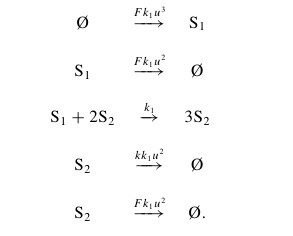
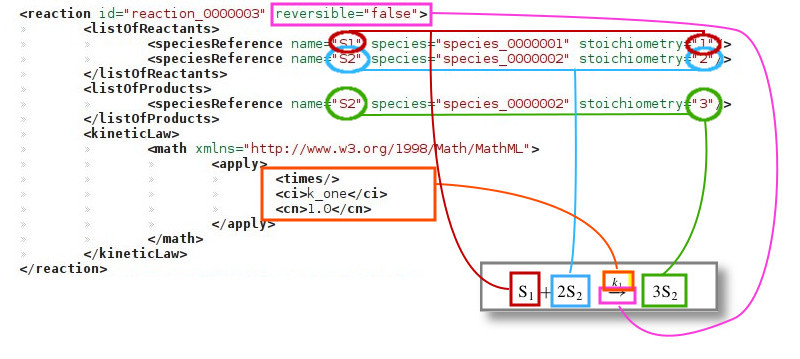
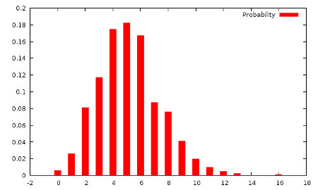
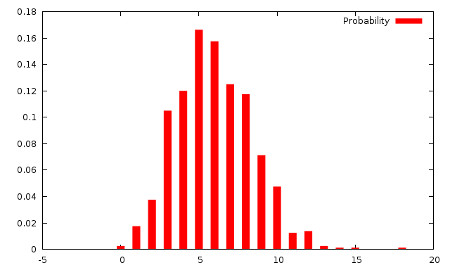
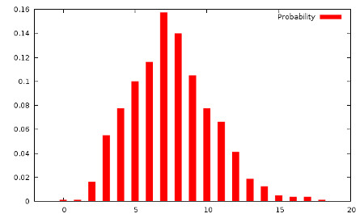

Rajesh Ramaswamy, Nelido Gonzalez-Segredo, and Ivo F. Sbalzarini. A new class of highly efficient exact stochastic simulation algorithms for chemical reaction networks. THE JOURNAL OF CHEMICAL PHYSICS, 130, 244104 (2009) (PDF)
Rajesh Ramaswamy, and Ivo F. Sbalzarini. A partial-propensity variant of the composition-rejection stochastic simulation algorithm for chemical reaction networks. THE JOURNAL OF CHEMICAL PHYSICS 132, 044102 (2010) (PDF)
Rajesh Ramaswamy, and Ivo F. Sbalzarini. A partial-propensity formulation of the stochastic simulation algorithm for chemical reaction networks with delays. THE JOURNAL OF CHEMICAL PHYSICS 134, 014106 (2011) (PDF)
Rajesh Ramaswamy and Ivo F. Sbalzarini. Exact on-lattice stochastic reaction-diffusion simulations using partial-propensity methods. THE JOURNAL OF CHEMICAL PHYSICS, 135, 244103 (2011) (PDF)
| Component | Location |
| library | libpssa |
| examples | examples |
| Command line interface | pssa_cli |
| test | pssa_test |
Inputs |
Outputs |
| Reaction Network (SBML file format) | Species population (VTK or text format) |
| Client (C++ code / config file) |
|  |
This example can be founded in the folder examples/Gray_Scott_2D and is
automaticaly compiled by the make command during
the installation process. This example shows how to use the library to simulate
a Gray-Scott reaction-diffusion system in 2D using the PSRD algorithm. It can be shown that this kind of system becomes bistable for particular values of F and k, showing some characteristics patterns. Below are some videas of simulation results that you get following the examples, using different parameters as defined in the 6 SBML files: |
| grayscott_alpha.sbml | grayscott_sp.sbml | grayscott_mv.sbml |
| grayscott_alpha7.sbml | grayscott_sp7.sbml | grayscott_mv7.sbml |
| lines 7-8 | We define the species. The property "initial amount" is not used when you use a "user defined" distribution. Constant="false" means that this specie does not act as a source (required by the SBML standard, but internally ignored). We will see later how to specify a sink or a source. |
| lines 11-12 | We specify diffusion constant for each species. The matching is done by the "name" property: If you have a species named S1, the library searches for a "libpssa:dS1" tag with the corresponding diffusion constant. |
| lines 17-22 | List of parameters that can be used in Math formulas. In this case, we define the parameters of the Gray-Scott system. |
| lines 24-41 |  We define the reactions. Each reaction has an ID, which is a name that uniquely identifies the reaction. Reversible=false means that the reaction can happen only in one direction. Then, the list of reactants and product has to be specified with their stoichiometry coefficients. The species properties and names refer to the names defined in the tag <ListOfSpecies>. The PSSAlib currently supports five mathematical operations: /times, /add, /minus, /divide, and /power. |
pssalib::datamodel::SimulationInfo simInfo;
int main(int argc, char** argv)
{
std::cout << "Running Gray Scott 2D example ... " << std::endl;
std::string inputFile = "sbml/grayscott.sbml";
if (!simInfo.readSBMLFile(inputFile))
{// Error}
...
// Boundary condition periodic
simInfo.eBoundaryConditions = pssalib::datamodel::SimulationInfo::BC_Periodic;
// 2D Homogeneous space
simInfo.eVolumeType = pssalib::datamodel::SimulationInfo::VT_Homogeneous2d;
// Volume
simInfo.dOmega = H*H*N*N;
// number of points in the grid (one side)
simInfo.unNumGridPoints = N;
// User defined concentration, and call-back
simInfo.eInitialPop = pssalib::datamodel::SimulationInfo::IP_UserDefined;
simInfo.eInitialUserDefined = init_callback;
// Starting time
simInfo.dTimeStart = 0.0;
// Time step between two configuration save
simInfo.dTimeStep = 2000/U/U/1000;
// End time of simulation
simIn fo.dTimeEnd = 2000/U/U;
// output location
simInfo.strOutput = "out";
simInfo.arSamples.push_back(1);
// output name sequence
simInfo.vtkOutName = "out/gray";
// run VTK at the end od the simulation
simInfo.vtkVisualize = false;
// Create an istance of the simulation class
pssalib::PSRD *pssa = new pssalib::PSRD();
// Set up the method to use to SPDM: Sort Partial Propensity Direct Method
if(!pssa->setMethod(pssalib::PSRD::M_SPDM))
{// Error }
// Set a callback for each reaction event
pssa->SetReactionCallback(&reaction_callback_wrapper, NULL);
// Set a callback for each
pssa->SetProgressCallback(&progress_callback, NULL);
// Run the simulation
bool result = pssa->run_avg(&simInfo);
return 0;
}
void init_callback(pssalib::datamodel::DataModel::SubvolumesInit * sb)
{
int start_sp1 = 0;
int start_sp2 = 0;
// Set initial population
// Gray Scott simulation require two species + 1 (source/sink)
if ( simInfo.getNumSpecies() != 2 + 1 )
throw "init_callback: Error Gray Scott example work with only two species";
// For each subvolume
for (int i = 0 ; i < sb->getNumSub() ; i++)
{
...
// Set population for species 1,2 subvolumes i to start_sp1 and start_sp2
sb->setInit(i,1,start_sp1);
sb->setInit(i,2,start_sp2);
}
}
void reaction_callback_wrapper(pssalib::datamodel::DataModel* dm, REAL t, void* user)
{
// do nothing
}
int total_frame = 0;
void progress_callback(UNSIGNED_INTEGER a, UNSIGNED_INTEGER b, void* user)
{
// display progress
std::cout << "\rProgress: " << a << "/" << b << " frame ( " << total_frame << " )" << std::flush;
total_frame++;
}
fo.dTimeEnd = 2000/U/U;
// output location
simInfo.strOutput = "out";
simInfo.arSamples.push_back(1);
// output name sequence
simInfo.vtkOutName = "out/gray";
// run VTK at the end od the simulation
simInfo.vtkVisualize = false;
// Create an istance of the simulation class
pssalib::PSRD *pssa = new pssalib::PSRD();
// Set up the method to use to SPDM: Sort Partial Propensity Direct Method
if(!pssa->setMethod(pssalib::PSRD::M_SPDM))
{// Error }
// Set a callback for each reaction event
pssa->SetReactionCallback(&reaction_callback_wrapper, NULL);
// Set a callback for each
pssa->SetProgressCallback(&progress_callback, NULL);
// Run the simulation
bool result = pssa->run_avg(&simInfo);
return 0;
}
void init_callback(pssalib::datamodel::DataModel::SubvolumesInit * sb)
{
int start_sp1 = 0;
int start_sp2 = 0;
// Set initial population
// Gray Scott simulation require two species + 1 (source/sink)
if ( simInfo.getNumSpecies() != 2 + 1 )
throw "init_callback: Error Gray Scott example work with only two species";
// For each subvolume
for (int i = 0 ; i < sb->getNumSub() ; i++)
{
...
// Set population for species 1,2 subvolumes i to start_sp1 and start_sp2
sb->setInit(i,1,start_sp1);
sb->setInit(i,2,start_sp2);
}
}
void reaction_callback_wrapper(pssalib::datamodel::DataModel* dm, REAL t, void* user)
{
// do nothing
}
int total_frame = 0;
void progress_callback(UNSIGNED_INTEGER a, UNSIGNED_INTEGER b, void* user)
{
// display progress
std::cout << "\rProgress: " << a << "/" << b << " frame ( " << total_frame << " )" << std::flush;
total_frame++;
}
| line 1 | Simulation structure that stores all information about the simulation |
| lines 11-59 | Initialize the simulation structure with all data needed for the simulation; the reference of the structure can be found here. At the least, all Public attributes marked with [IN MANDATORY] have to be filled |
| line 64 | Creating an instance of the simulation engine. Here: PSRD for stochastic reaction-diffusion. |
| line 68 | Defining the simulation algorithm to use within each subvolume (M_SPDM = Sorting Partial Propensity Direct Method). For a complete list of implmented simulation algorithms, see here. |
| lines 73-77 | Setting up a callback for each reaction event and for each trajectory. In this example these callbacks are used to write result files. |
| line 81 | Run the simulation; see the function reference. |
| lines 86-109 | Initializes the population to the initial condition. |
| 2x2x2 = 8 points | 8x8x8 = 64 points | 20x20x20 = 8000 points |
|  |  |  |
| Configuration file keyword | Command-line argument | C++ SimInfo parameter |
| output_path | --output_path -o | SimulationInfo.strOutput |
| mode | --mode | PSRD.run_avg() / PSRD.run_hist() |
| methods | --methods -m | PSRD.setMethod() |
| species | --species | arSpeciesIds |
| dt | --dt | SimulationInfo.dTimeStep |
| tstart | --tstart | SimulationInfo.dTimeStart |
| tend | --tend | SimulationInfo.dTimeEnd |
| ntrajectories | --ntrajectories | SimulationInfo.arSamples |
| sbml_file | --sbml_file | readSBMLFile() |
| boundary | --boundary | SimulationInfo.eBoundaryConditions |
| volumetype | --volumetype | SimulationInfo.eVolumeType |
| gridpoints | --gridpoints | SimulationInfo.unNumGridPoints |
| omega | --omega | SimulationInfo.dOmega |
| initialpop | --initialpop | SimulationInfo.eInitialPop |
| verbose | --verbose -v | SimulationInfo.bVerbose |
| libpssa command line interface Command-line: |
|
| -c [ --config_file ] arg (=config.cfg) | Configuration file |
| Generic options: | |
| -h [ --help ] | produce help message |
| -o [ --output_path ] arg | Output path |
| -i [ --sbml_file ] arg | SBML input file |
| -s [ --species ] arg | Comma-separated list of species ids for which histograms will be computed |
| --dt arg (=0.10000000000000001) | Time interval between outputs |
| --tend arg (=1000) | End time of the simulation |
| --tstart arg (=0) | Time at which to begin outputing trajectories |
| -n [ --ntrajectories ] arg (=10) | Comma-separated list of number of trajectories to simulate |
| --mode arg (=stat) | Mode of the simulation, can be either "trial" or "stat" |
| -m [ --methods ] arg | Comma-separated list of simulation method ids: 0 - Gillespie's Direct Method 1 - Partial Propensity Direct Method 2 - PSSA with Composition-Rejection Sampling 3 - Sorting Partial Propensity Direct Method |
| -b [ --boundary ] arg (=periodic) | Boundary conditions, can be either "periodic" or "reflexive" |
| --volumetype arg (=single) | Volume description, can be either: "single" - a single subvolume (no diffusion) "homogeneous2d" - 2-dimensional homogeneous grid "homogeneous3d" - 3-dimensional homogeneous grid |
| --gridpoints arg (=4) | Number of grid points along one dimension |
| --initialpop arg (=distribute) | Specifies how the initial population specified in the SBML file is distributed across the volume: "distribute" - the population is evenly distributed, i.e. each subvolume gets pop/num_volumes "concentrate" - the population is concentrated in the middle cell, i.e. one subvolume gets everything "multiply" - the population is multiplied, i.e. each subvolume gets the total population |
| -v [ --verbose ] | If specified, the program will print additional information to cout |